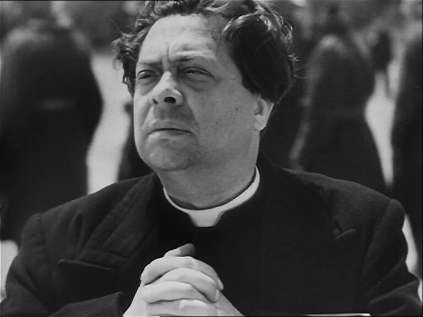
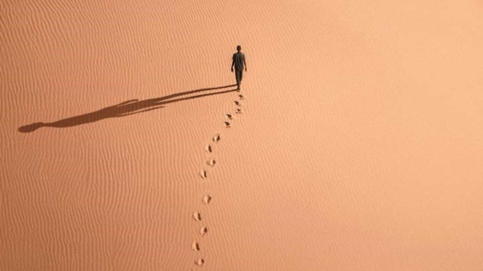
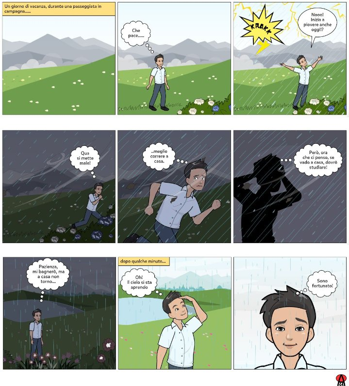

Video 1 · I campi
- Di chi o di che cosa parla un campo: del personaggio o del luogo?
- Quale campo fa sentire il personaggio piccolo e solo?
- In quali momenti di un film si usano i campi lunghi?
L'inquadratura è lo sguardo della macchina da presa: il regista decide quanto avvicinarsi. Da lontano racconta un luogo, da vicino racconta un'emozione.
Perché un regista dovrebbe allontanarsi o avvicinarsi a un personaggio?


Nella foto A vediamo un volto e possiamo leggerne l'espressione; nella foto B il deserto è il vero protagonista e l'uomo sembra piccolo e solo. Avvicinarsi racconta le emozioni, allontanarsi racconta il luogo e la situazione.
Annotate le risposte alla lavagna e rileggetele dopo la visione dei due video seguenti.
Tutti i fotogrammi qui sotto mostrano la stessa identica scena: un ragazzo davanti a una casa in montagna. Non cambia niente nel mondo; cambia solo la distanza della macchina da presa. Fate notare come, avvicinandosi, il paesaggio scompare e il volto prende il suo posto.
Dieci momenti del cinema in bianco e nero, dai fratelli Lumière a Orson Welles. Aprite lo spezzone, fermatevi sul momento indicato e fate votare la classe prima di cliccare la risposta.
Nel fumetto la vignetta fa il lavoro dell'inquadratura: il disegnatore sceglie la distanza esattamente come un regista. La differenza è che il fumetto non si muove, quindi ogni vignetta deve scegliere il momento giusto.

Che inquadratura è stata scelta in ogni vignetta? E perché cambia?
Una storia in nove vignette, e quasi ogni vignetta cambia distanza:
Alcune vignette stanno a metà tra due inquadrature: discutetene in classe, conta saper spiegare la scelta.